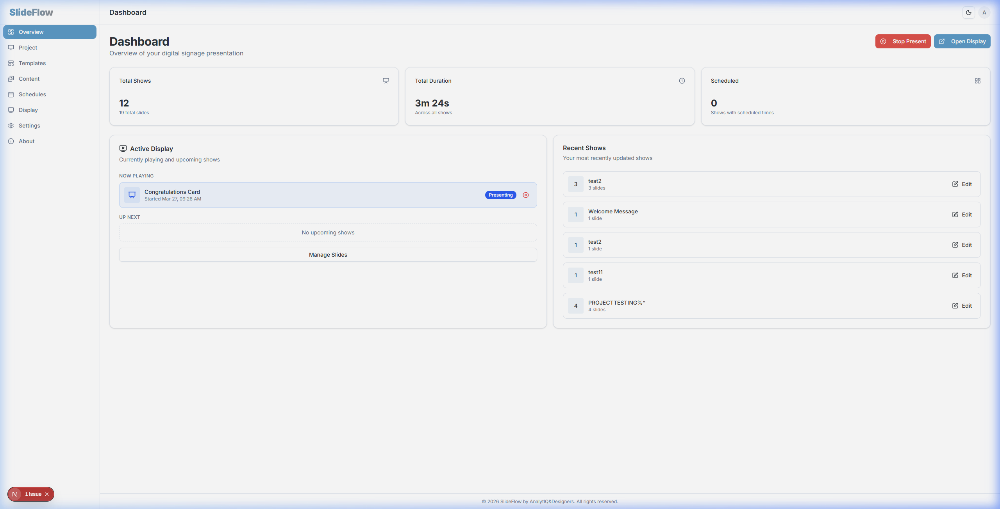
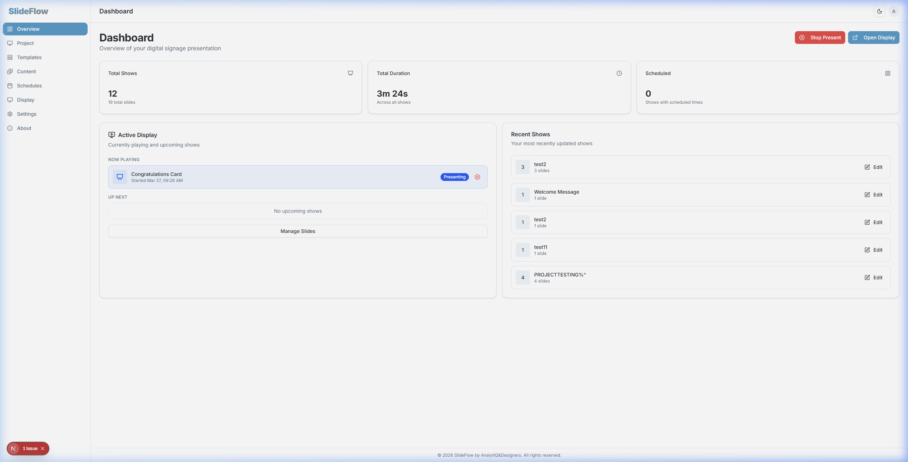
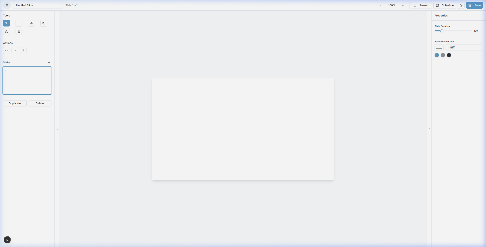
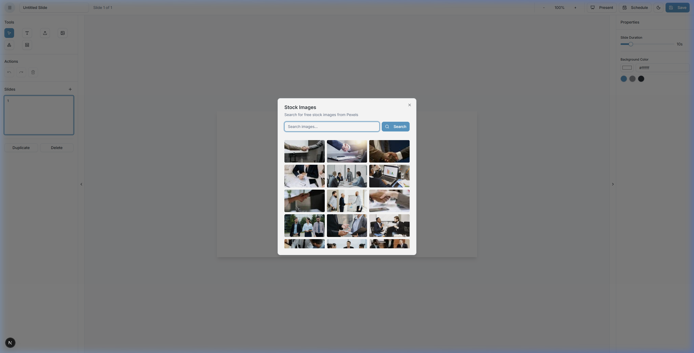
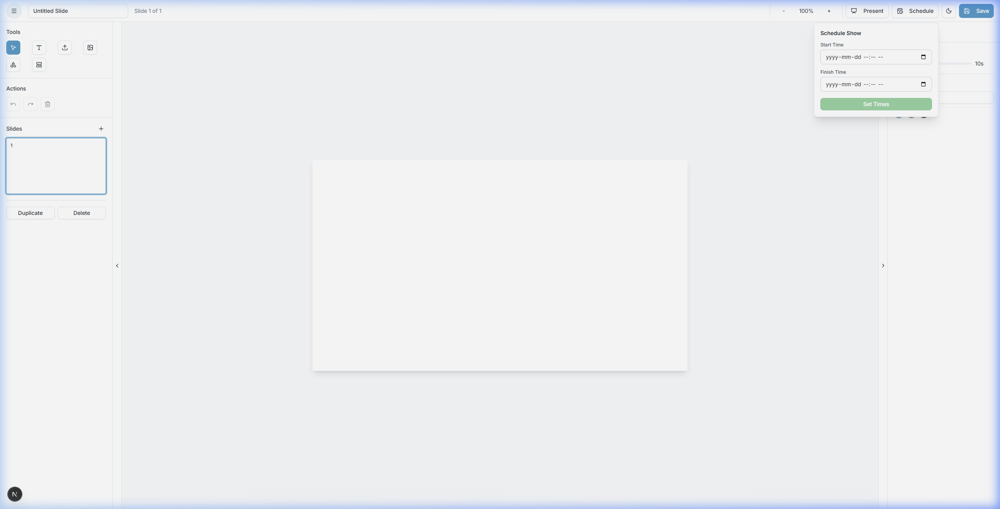
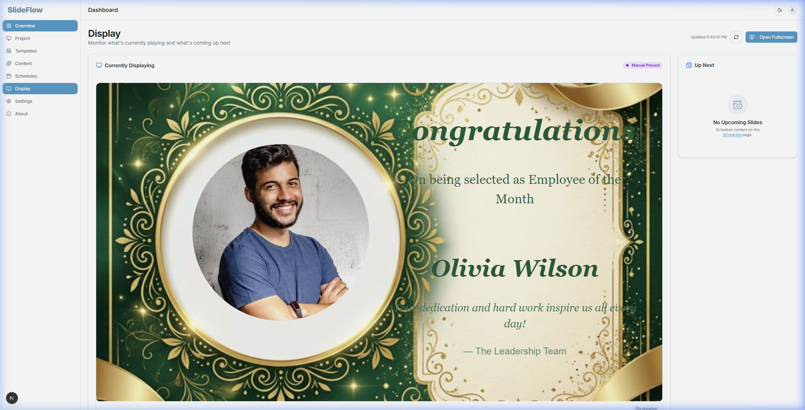
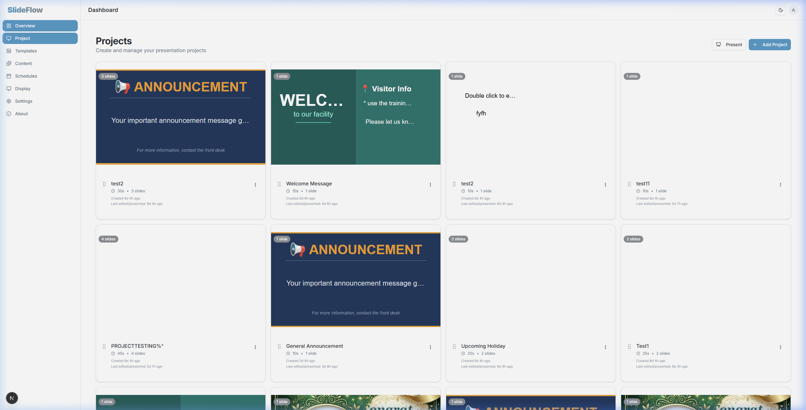

AnalytIQ&Designers
Training Material
Prepared For
Stratus Advance Technologies
Table of Contents
Training Modules
01
System Overview
3
02
Navigation
4
03
Screen Menu (Slides)
5
04
Content Management
6
05
Scheduling
7
06
Display System
8
07
Archiving
9
OBJECTIVE
Understand exactly what SlideFlow does and differentiate between user roles.
What the System Does
SlideFlow is a centralized Content Management System (CMS) designed specifically for digital signage. It allows you to build multimedia "Shows" (presentations) and instantly broadcast them to physical TV screens located anywhere in your building.
Roles (Admin vs Display)
- Admin: Users who log into the dashboard (
/dashboard) to create slides, upload media, and manage schedules.
- Display: The passive physical TVs running the client receiver (
/display). Displays cannot edit content; they only passively subscribe to the Admin's schedules and instant broadcasts via WebSockets.
Step-by-Step Instructions
- 1 Navigate to the SlideFlow URL.
- 2 Enter your Admin Username and Password to access the Control Center.
- 3 Observe the difference between your dashboard view and the TV on the wall running the Display URL.

Figure 1.1 — SlideFlow Dashboard showing metric cards, Active Display, and Up Next queue
EXAMPLE TASK
Log out of your Admin account using the top-right User Avatar, then log back in successfully to initialize your session.
OBJECTIVE
Memorize the Dashboard interface and correctly map the menu structure.
Dashboard
The main Overview Dashboard displays three metric cards (Total Shows, Total Duration, Scheduled), an Active Display monitor, and an Up Next scheduling queue. The top right corner contains a quick link to Open Display.
Menu Structure
The persistent left sidebar is your map to the system:
- Overview: Landing page for Dashboard Metrics.
- Project: The library of all saved slide decks.
- Templates: Manage slide templates.
- Content: Media asset management.
- Schedules: Master calendar views.
- Display: A quick link to the receiver client.
- Settings: System configurations.
- About: Information about the AnalytIQ&Designers team.
Step-by-Step Instructions
- 1 Locate the left sidebar menu.
- 2 Click Project to view your gallery of presentations.
- 3 If you prefer a darker aesthetic, ensure you are in the Editor, and click the Sun/Moon Icon in the top navigation bar to toggle Dark Mode.

Figure 2.1 — Dashboard navigation with left sidebar menu structure
EXAMPLE TASK
Navigate to the About page, verify the development team name, then return to the Overview dashboard and find the Total Duration metric card.
OBJECTIVE
Learn to create, edit, duplicate, and preview raw signage slides using the Visual Editor.
Add Slide / Edit Slide / Preview
The Visual Editor contains a top header, a left panel (for Slides, Tools, and Actions), a center canvas, and a right panel labeled "Properties" (for precise styling adjustments).
Step-by-Step Instructions
- 1 From the Project page, click the Add Project button to create a new show.
- 2 Inside the editor timeline, click the + (Plus Icon) button to append a blank slide.
- 3 Under "Tools", click the Add Text (Type Icon) to drop text onto the canvas.
- 4 Use the Right Panel (Properties) to adjust Text Color and Font Size.
- 5 Click the Present button in the top header to preview your presentation.
- 6 Click the red Stop Present button to end the preview.

Figure 3.1 — Visual Editor showing Tools panel, Canvas area, and Properties panel
EXAMPLE TASK
Create a new presentation. Add three slides. Put a uniquely colored text block on each slide using the Properties panel. Click Present to watch the slides transition.
OBJECTIVE
Successfully source, upload, and organize multimedia content for signage playback.
Upload Files / Search Content
Content insertion is managed via the Left Panel's "Tools" section in the Visual Editor.
Step-by-Step Instructions
- 1 Open a slide in the Visual Editor.
- 2 Direct your attention to the Left Panel under the "Tools" grid.
- 3 To upload a file from your computer, click the Upload Image/Video (Upload Icon) tool.
- 4 To search the internet for content, click the Stock Images (Image Icon) tool.
- 5 In the modal, type a search term into the Pexels Search bar to find royalty-free stock imagery.
- 6 Click the Templates (LayoutTemplate Icon) tool to select a predefined visual structure.

Figure 4.1 — Stock Images dialog showing Pexels integration for royalty-free media
EXAMPLE TASK
Start a blank slide. Use the Upload button to upload your company logo (PNG). Use Stock Images to find an image of a "Coffee Cup" and place it next to your logo.
OBJECTIVE
Understand how to dictate exactly when content plays without manual intervention.
Create Schedule / Set Time / Avoid Conflicts
The calendar system dictates passive automation. When no manual override is active, the system reads the calendar triggers.
Step-by-Step Instructions
- 1 Open a completed presentation in the Visual Editor.
- 2 Click the Schedule (CalendarClock Icon) button in the top header.
- 3 Configure the Start Time input for the desired start.
- 4 Configure the Finish Time input for the desired end.
- 5 Click Save Schedule.
- 6 Avoiding conflicts: If two shows overlap, screens will loop both shows sequentially.

Figure 5.1 — Scheduling interface with Start/Finish time configuration
EXAMPLE TASK
Schedule a presentation to run for the next three hours. Then go to the Dashboard's Up Next panel and click Cancel Schedule to abort safely.
OBJECTIVE
Realize how the public views your creations on the physical television hardware.
How Slides Appear / What Users See
The TVs running /display have zero administrative UI. They are purely full-screen, silent receivers. When a slide has a duration of 10 seconds, the TV holds the image natively, then crossfades to the next.
Step-by-Step Instructions
- 1 On your Admin Dashboard, locate the Open Display button at the top right.
- 2 Click it. A new browser tab opens mimicking a physical TV screen.
- 3 Observe that the Display interface is completely locked down — no menus, no buttons.
- 4 Keep the Display tab open. Switch back and hit Present on a project. The Display will update in real-time.

Figure 6.1 — Dashboard Display management showing active receiver status
EXAMPLE TASK
Explain to your instructor why the Display System requires no login credentials relative to the Admin Control Center.
OBJECTIVE
Understand data lifecycle management, database cleanliness, and manual deletion protocols.
What Happens to Expired Content / Why It Matters
Why it matters: Digital signage generates massive amounts of heavy asset data (4K Images, Videos). The server cannot hold infinite media files.
Expired Content: When a show's scheduled "Finish Time" passes, the schedule drops off the TV. However, the show and its media remain in the Project library permanently until manually archived/deleted by an Admin.
Step-by-Step Instructions
- 1 Navigate to the Project library.
- 2 Identify a show that is out-of-date and no longer scheduled.
- 3 Click the Three-Dot Options Menu on the show's card.
- 4 Select Delete.
- 5 Confirm the deletion. This permanently strips the show's data from the server database.

Figure 7.1 — Project library showing show cards with options for editing and deletion
EXAMPLE TASK
Use the Three-Dot menu to Duplicate an existing project. Treat the original as the "Archived Template". Now immediately Delete the duplicate to practice cleaning out the workspace.